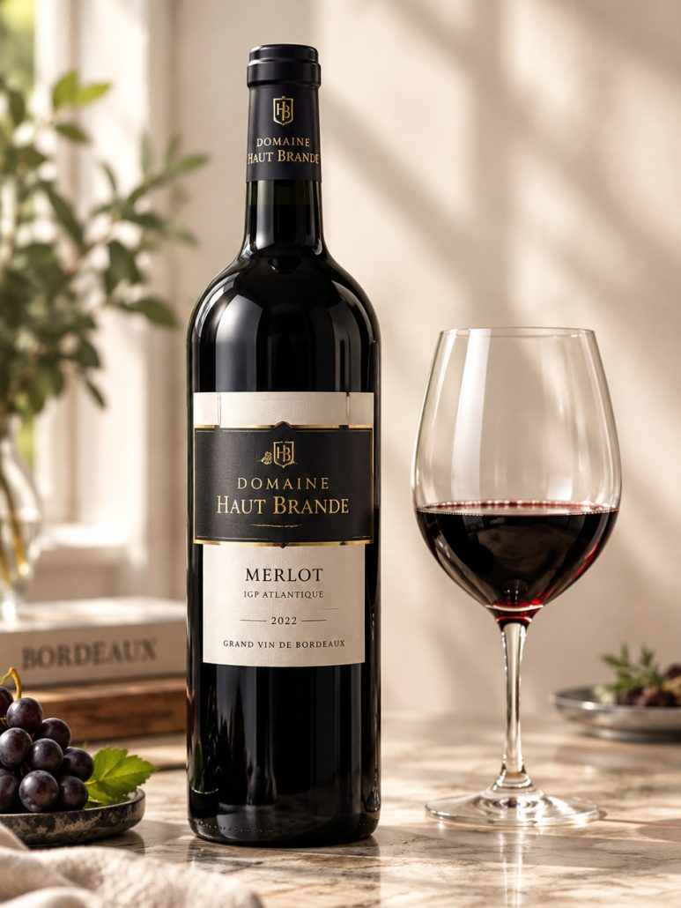
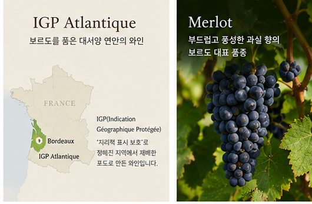
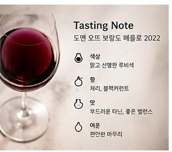
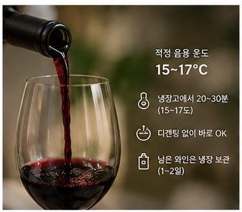
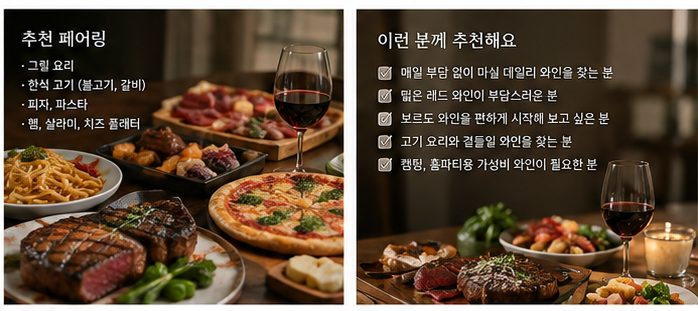

보르도 데일리 레드와인 추천
도멘 오뜨 브랑드 메를로 2022
도멘 오뜨 브랑드 메를로 2022는 프랑스 보르도 IGP 아틀란티크의 메를로 100% 레드로, 부드럽고 밸런스가 좋아 고기 요리와 편하게 곁들일 데일리 보르도 레드를 찾는 분께 맞아요.
“보르도 와인은 왠지 비싸고 어렵지 않을까?”
레드 와인을 좋아하다 보면 한 번쯤 이런 생각을 하게 됩니다.
하지만 보르도 사람들이 매일 저녁 식탁에 올리는 와인은 생각보다 훨씬 편안하고, 가격 부담도 적습니다.
그 편안함의 중심에 있는 품종이 바로 메를로(Merlot)입니다.
오늘 소개할 도멘 오뜨 브랑드 메를로 2022는 보르도 메를로의 부드러움을 데일리 와인으로 즐기고 싶은 분들에게 반가운 한 병입니다.

한눈에 보는 도멘 오뜨 브랑드 메를로 2022
• 생산자: 도멘 오뜨 브랑드
• 산지: 프랑스 보르도, IGP 아틀란티크(Atlantique)
• 품종: 메를로 100%
• 스타일: 부드럽고 밸런스 좋은 레드 와인
• 이런 분께: 고기 요리와 편하게 곁들일 데일리 레드 와인을 찾는 분

도멘 오뜨 브랑드는 어떤 와인일까?
도멘 오뜨 브랑드 메를로는 5대째 이어온 보르도 양조 테크닉으로 만든 메를로 100% 레드 와인입니다.
한 가문이 다섯 세대에 걸쳐 보르도에서 와인을 만들어 왔다는 것은, 그만큼 이 땅의 포도와 날씨를 잘 알고 있다는 뜻이기도 합니다.
그래서 이 와인은 화려하게 꾸미기보다는 잘 익은 과실 + 부드러운 타닌 + 편안한 밸런스 라는 메를로의 기본기에 충실한 스타일입니다.
2021년 리옹 국제 와인 콩쿠르(Concours International de Lyon)에서 금메달(Gold Medal)을 받은 이력도 있습니다.
메달만으로 맛을 판단할 수는 없지만, 꾸준한 품질을 가늠해 볼 수 있는 참고할 만한 지표라고 할 수 있습니다.

IGP 아틀란티크(Atlantique)는 무슨 뜻일까?
IGP 아틀란티크는 보르도를 포함한 프랑스 대서양 연안 지역에서 만드는 와인에 붙는 지역 등급입니다.
IGP(Indication Géographique Protégée)는 ‘지리적 표시 보호’라는 뜻으로, 정해진 지역에서 재배한 포도로 만든 와인이라는 표시입니다.
AOC 보르도보다 품종과 양조 방식이 조금 더 자유로운 대신, 산지의 개성을 살리면서도 편하게 마실 수 있는 와인이 많이 나옵니다.
쉽게 이야기하면,
보르도의 기후와 양조 노하우를 담은, 부담 없는 데일리 와인
이라고 이해하면 좋습니다.
메를로는 어떤 품종일까?
메를로는 보르도 오른쪽 강변(우안)을 대표하는, 부드럽고 둥근 맛의 레드 와인 품종입니다.
까베르네 소비뇽이 단단한 타닌과 구조감을 가진 품종이라면, 메를로는 타닌이 부드럽고 과실 향이 풍성해 레드 와인을 처음 시작하는 분들도 편하게 마실 수 있습니다.
보르도의 유명한 와인들도 메를로를 블렌딩의 중심으로 삼는 경우가 많을 만큼, 보르도에서는 빼놓을 수 없는 품종이죠.
도멘 오뜨 브랑드 메를로 2022 테이스팅 노트
잔에 따르면 맑고 선명한 루비색이 먼저 보입니다.
향에서는 체리, 블랙커런트 같은 레드·블랙 과일 향이 신선하게 올라옵니다.
입안에서는 타닌이 거칠지 않고 부드럽게 감싸 주고, 과실과 산도가 한쪽으로 치우치지 않는 좋은 밸런스를 보여줍니다.
마무리까지 편안하게 이어져서, 식사와 함께 한 잔 두 잔 자연스럽게 손이 가는 스타일에 가깝습니다.
DOMAINE HAUT BRANDE MERLOT 2022
- 산지: 프랑스 · 보르도 · IGP 아틀란티크
- 품종: 메를로 100%
- 빈티지: 2022
- 알코올: 13.5%
- 스타일: 부드럽고 밸런스 좋은 미디엄 바디 레드
- 주요 풍미: 체리, 블랙커런트

도멘 오뜨 브랑드 메를로는 어떻게 마시면 좋을까?
부드러운 메를로는 살짝 서늘한 온도에서 마실 때 과실 향이 가장 잘 살아납니다.
• 냉장고에 20~30분 넣었다가 꺼내 15~17도 정도로
• 따로 디캔팅하지 않고 바로 따라도 충분
• 남은 와인은 마개를 막아 냉장 보관하면 1~2일 정도 즐기기 좋음
실온이 높은 실내에 그대로 두면 알코올이 도드라질 수 있어서, 살짝 차갑게 마시면 체리 향이 훨씬 산뜻하게 느껴집니다.
와인 소개 자료에서도 그릴 요리, 피자, 파스타, 델리카트슨(햄·살라미 같은 가공육)과의 페어링을 추천하고 있습니다.
땡큐와인에서 추천한다면 이렇게 나눠 즐겨보겠습니다.
- 구이: 그릴에 구운 고기, 돼지 등심 구이, 통닭
- 한식 고기: 불고기, 소갈비
- 이탈리안: 피자, 토마토 소스 파스타
- 가벼운 안주: 햄, 살라미, 치즈 플래터
특히 불고기와 소갈비처럼 단짠 양념이 들어간 한식 고기 요리와 잘 맞습니다.
메를로의 부드러운 과실 향이 달큰한 간장 양념과 만나면, 고기의 감칠맛이 한층 살아나거든요.
개인적으로는 선선해진 요즘, 집에서 돼지 등심을 구워 이 와인 한 잔과 함께하는 저녁을 추천드립니다.

- 매일 저녁 부담 없이 열 수 있는 데일리 레드 와인을 찾는 분
- 떫은 레드 와인이 부담스러운 분
- 보르도 와인을 편하게 시작해 보고 싶은 분
- 불고기, 갈비, 통닭 같은 집밥·배달 음식과 곁들일 와인을 찾는 분
- 캠핑이나 홈파티에서 그릴 요리와 함께할 레드 와인이 필요한 분
- 모임에 여러 병 준비할 가성비 레드 와인을 찾는 분
특히 “보르도 와인은 마셔 보고 싶은데 너무 무겁고 비싼 건 부담스럽다”는 분들께 권해 드리기 좋은 와인입니다.
자주 묻는 질문
->15~17도 정도로 살짝 서늘하게 마시면 과실 향이 더 산뜻하게 느껴집니다.
도멘 오뜨 브랑드 메를로 2022는 5대째 이어온 보르도의 양조 노하우를 부담 없는 데일리 와인으로 보여주는 메를로입니다. 화려하기보다는 부드럽고, 어떤 음식과도 무난하게 어울리는 균형이 가장 큰 장점이죠.
이 글은 땡큐와인 네이버 블로그에 먼저 올린 글이에요.